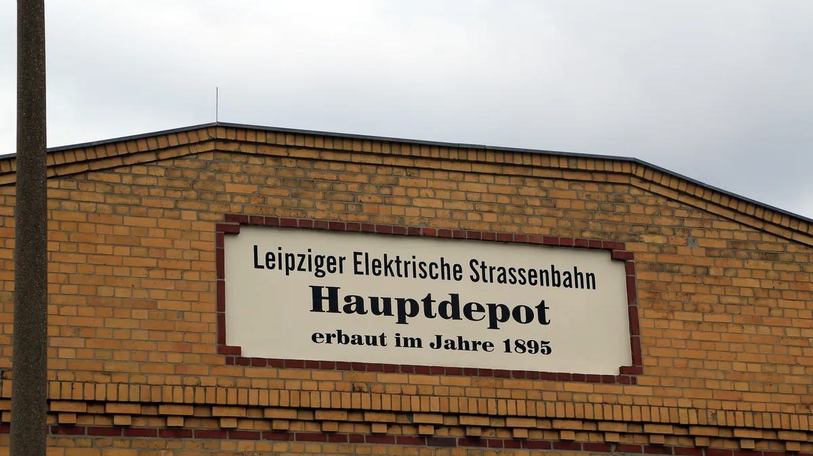
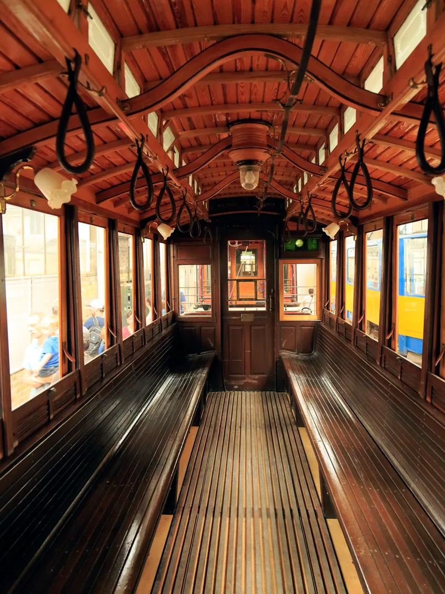
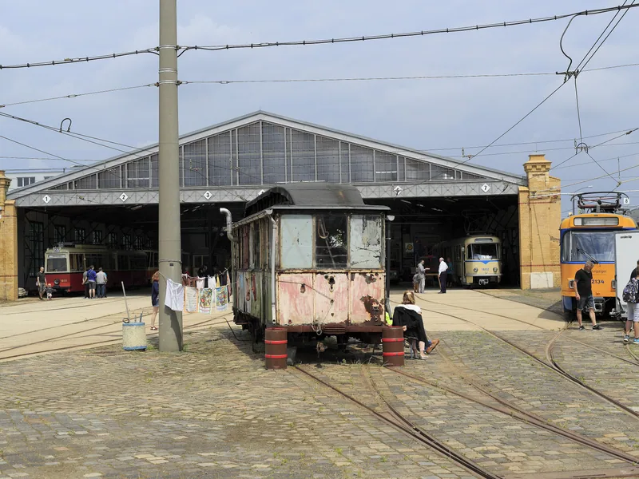
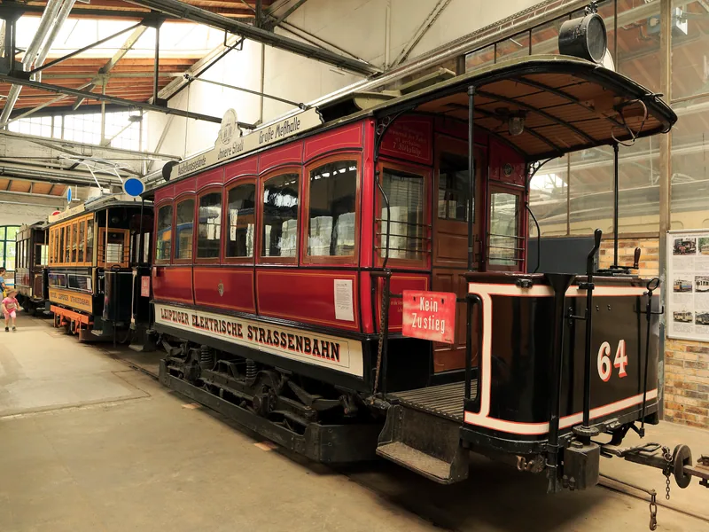
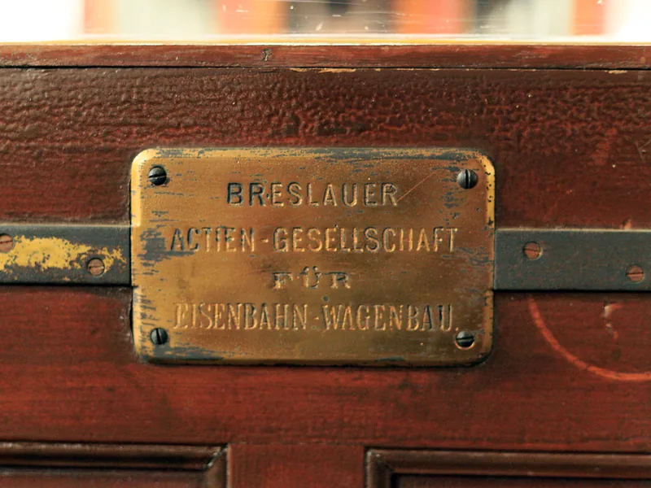
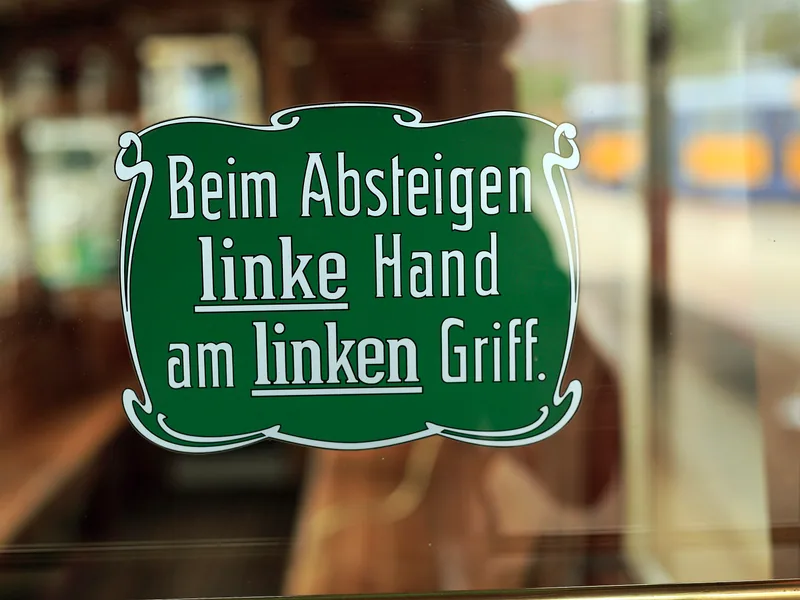
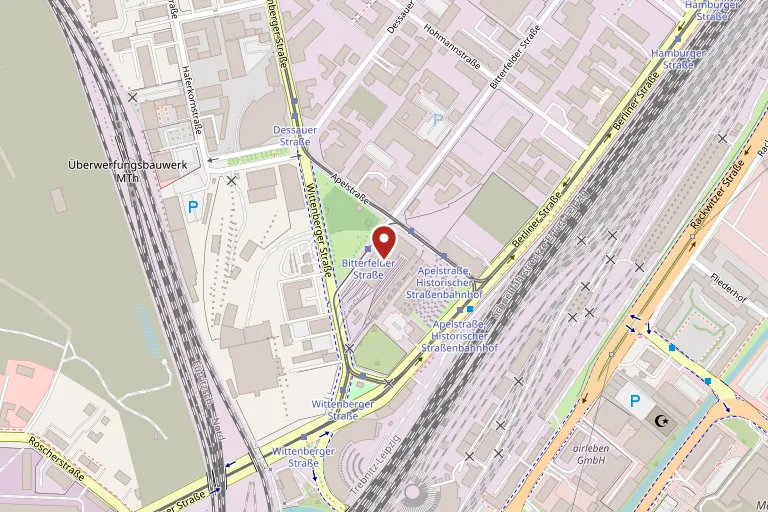

Straßenbahnmuseum Leipzig
Im ehemaligen Hauptdepot der Leipziger Elektrischen Straßenbahn von 1895: historische Trieb- und Beiwagen aus den Jahren ab 1896, zum großen Teil betriebsfähig.
Das Hauptdepot von 1895
Im Giebel des Gebäudes steht bis heute, worum es hier geht: „Leipziger Elektrische Strassenbahn — Hauptdepot — erbaut im Jahre 1895“. Von 1943 bis 1945 fiel die Anlage schweren Bombardements zum Opfer.
Seit 2019 steht die Sammlung in diesem Depot an der Apelstraße, einem Teil des früheren Straßenbahnhofs Wittenberger Straße in Eutritzsch. Davor zeigte der Verein sie seit dem 17. Mai 1998 im Straßenbahnhof Möckern.

Was hier steht
Zum Bestand gehören 21 historische Triebwagen und 17 Beiwagen aus den Jahren 1896 bis 1988, dazu elf schienengebundene Sonderfahrzeuge, ein Pferdebahnwagen, fünf Omnibusse — darunter ein Doppeldecker —, zwei Obusse, ein Taxi und ein Verkehrsfunkwagen (Stand 2022).
Das Ziel des Vereins ist, von jedem Leipziger Wagentyp ein Fahrzeug in betriebsfähigem Zustand zu erhalten und im öffentlichen Netz zu fahren. Neben den Straßenbahnen sind historische Busse und technische Exponate zu sehen.

Triebwagen 308
Am 21. Dezember 1896 ging Triebwagen 308 in Betrieb — wenige Monate nach dem Start des elektrischen Straßenbahnbetriebs in Leipzig am 17. April 1896. Nach Angaben des Vereins ist er der älteste mit Originalausrüstung versehene, betriebsfähige Straßenbahnwagen auf dem europäischen Festland.
Andere Wagen kamen auf Umwegen zurück. Triebwagen 349, Baujahr 1897, wurde 1987 in Markkleeberg-West geborgen, wo er jahrzehntelang als Gartenlaube gedient hatte.

Aus dem Depot
Wagen, Hallen und Details — aufgenommen am heutigen Standort in der Apelstraße.
-

An einem Öffnungstag -

Triebwagen 64 -

Das Schild des Wagenbauers -

Hinweis an der Wagentür
Öffnungstage
| Mai bis September | jeden 3. Sonntag im Monat, 10 bis 17 Uhr |
|---|
Stand: August 2026. Bitte vor dem Besuch beim Haus bestätigen lassen.
Termine 2026
- 17. Mai, 21. Juni, 19. Juli, 16. August und 20. September 2026, jeweils 10 bis 17 Uhr.
- Zur Museumsnacht am 9. Mai 2026 ist von 18 bis 24 Uhr geöffnet. Darüber hinaus gibt es vereinzelt Veranstaltungen nach besonderer Ankündigung.
- Die Rekonstruktionswerkstatt kann an den Öffnungstagen im Mai und September bei Führungen besichtigt werden.
Eintritt
| Karte | Preis |
|---|---|
| Eintritt Museum | 4,00 € |
| Eintritt Museum, ermäßigt | 2,00 € |
| Eintritt Museum, Familien | 10,00 € |
| Sonderfahrt ab Museumsgelände | 7,00 € |
| Sonderfahrt, ermäßigt | 3,50 € |
| Tageskarte, Eintritt und Fahrten nach Belieben | 25,00 € |
- Der Familienpreis gilt für höchstens zwei Erwachsene mit beliebig vielen Kindern.
- Ermäßigung erhalten Kinder von 6 bis 14 Jahren, Schwerbehinderte mit Ausweis sowie Inhaber von Leipzig-Pass und Leipzig-Card. Kinder unter 6 Jahren zahlen keinen Eintritt.
- Zu Sonderveranstaltungen wie der Museumsnacht gelten diese Preise nicht. Die Teilnahme an Fahrten ist nur bei verfügbaren Platzkapazitäten möglich.
Preisstand: August 2026.
Anfahrt
Anschrift
Apelstraße 1
04129 Leipzig
Lage
Im Ortsteil Eutritzsch, in einem Teil des ehemaligen Straßenbahnhofs Wittenberger Straße.
Straßenbahn
Linien 9 und 14 bis zur Haltestelle „Apelstraße, Historischer Straßenbahnhof“. Vom Hauptbahnhof fährt die Linie 9 ab Westseite, Steig E, Richtung Thekla.
Auto
Der Verein empfiehlt das Parkdeck Mockauer Straße und von dort die Linie 9 ab „Mockau, Post“ Richtung S-Bahnhof Connewitz.

Kontakt
Fragen zu Öffnungstagen, Führungen, Fahrzeuganmietung oder zur Barrierefreiheit beantwortet die Arbeitsgemeinschaft „Historische Nahverkehrsmittel Leipzig“ e. V., die das Museum ehrenamtlich betreibt.
- Träger
- Arbeitsgemeinschaft „Historische Nahverkehrsmittel Leipzig“ e. V.
- Telefon
- +49 341 3928904
- info@strassenbahnmuseum.de
- Im Netz
- www.strassenbahnmuseum.de